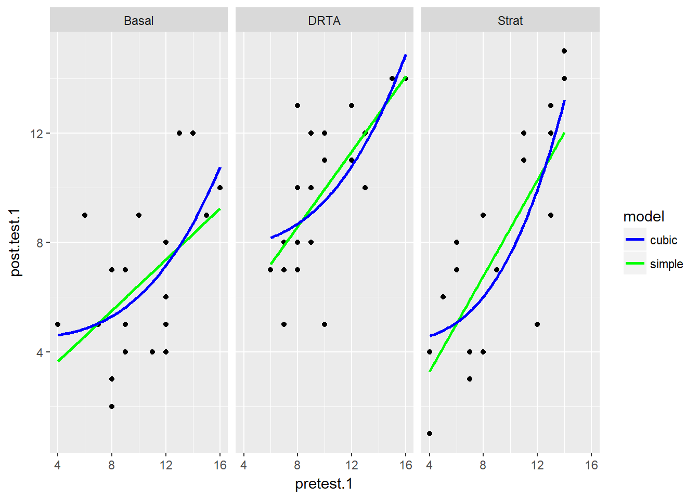
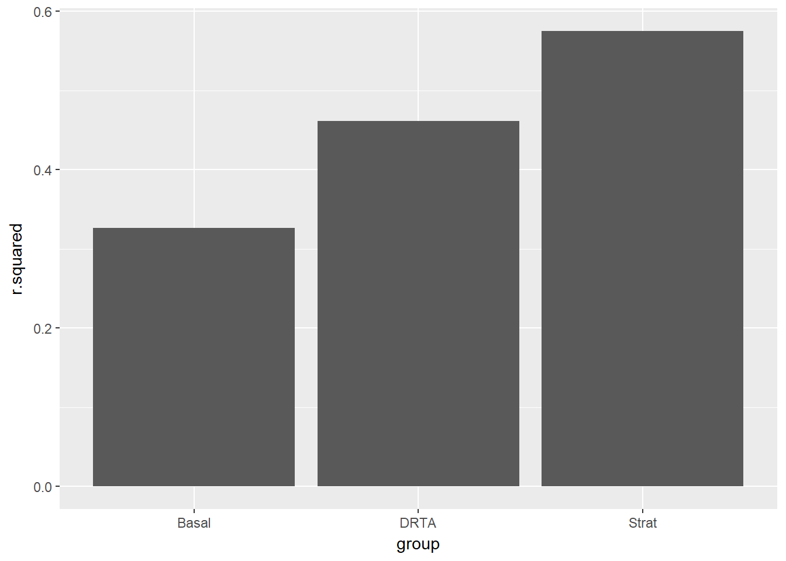
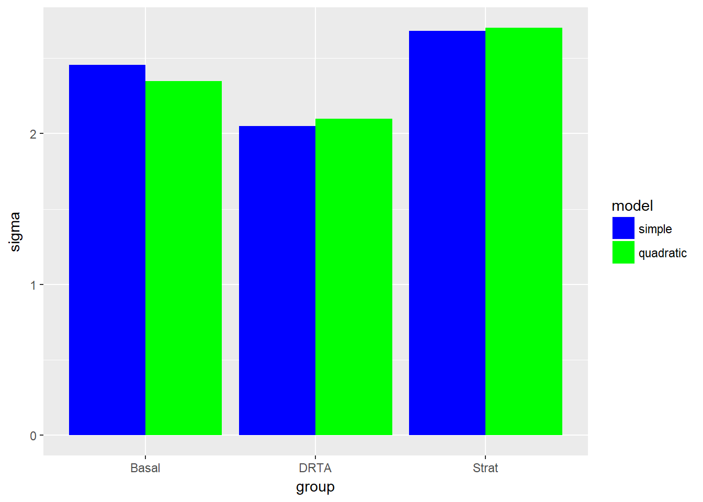

As a way to continue to teach myself statistics and learn new techniques (including some machine learning methods I am very unfamiliar with), I am taking Stanford’s self-paced statistical learning course. You can find the textbook for the course here; I have found it extremely insightful so far, seeing as the authors are some of the pioneers of modern data science methods today.
In it, they talk in-depth about the bias-variance trade off. In general, more flexible models have higher variance; that is, models that fit training data too closely (highly flexible models) will vary considerably given new data. This is the case of overfitting, where the model is picking up random noise rather than the true signal or function. However, more flexible models have less bias, where bias refers to the error introduced by approximating a complicated relationship with a model that is far too simplistic. Ordinary least squares regression is typically used as the overly simplistic model that has high bias.
Comparing two models
For this post, I will again use the Baumann dataset from the car package, as the data are test score data from an educational intervention.
library(tidyverse)
library(car)
library(broom)
library(knitr)
baumann <- carData::Baumann %>%
as_tibble()
baumann## # A tibble: 66 x 6
## group pretest.1 pretest.2 post.test.1 post.test.2 post.test.3
## * <fct> <int> <int> <int> <int> <int>
## 1 Basal 4 3 5 4 41
## 2 Basal 6 5 9 5 41
## 3 Basal 9 4 5 3 43
## 4 Basal 12 6 8 5 46
## 5 Basal 16 5 10 9 46
## 6 Basal 15 13 9 8 45
## 7 Basal 14 8 12 5 45
## 8 Basal 12 7 5 5 32
## 9 Basal 12 3 8 7 33
## 10 Basal 8 8 7 7 39
## # ... with 56 more rowsBelow I make three plots, one for each intervention, and fit two models for each group: a simple linear regression in blue, and another linear regression with a quadratic term.
\[\begin{equation} y = \beta_0 + \beta_1 x + \varepsilon \end{equation}\]
\[\begin{equation} y = \beta_0 + \beta_1 x + \beta_2 x^2 + \varepsilon \end{equation}\]
baumann %>%
ggplot(aes(x = pretest.1, y = post.test.1)) +
geom_point() +
geom_smooth(method = "lm", se = FALSE, aes(color = "simple")) +
geom_smooth(method = "lm", formula = y ~ x + I(x^2), se = FALSE, aes(color = "quadratic")) +
facet_wrap(~ group) +
scale_colour_manual(name = "model", values=c("blue", "green"))
It looks like for the most part, the simple regression does no worse than the quadratic term, but in the last panel for the Strat intervention, the relationship may be more curved. How would we compare these models more closely?
Nest-Fit-Unnest
I think using the purrr and broom packages can really benefit us. Here, I’m borrowing from one of broom’s vignettes called “broom and dplyr.” In it, they recommend a nest-fit-unnest workflow to create multiple simple models for comparison. If I fit all the models manually, I would have to fit 2 x 3 = 6 separate models and compare the summary outputs for each. Instead, with the tidyverse packages, I can nest the data, fit the models and then unnest and use the glance function to analyze the model fit statistics in one easy-to-read table.
The simple linear model:
#simple model
lm.1 <- baumann %>%
nest(-group) %>%
mutate(
model = "simple",
fit = map(data, ~ lm(post.test.1 ~ pretest.1, data = .x)),
glance = map(fit, glance)
) %>%
unnest(glance, .drop = TRUE) %>%
select(c(1:3, 5:7)) #just selecting the relevant statistics from glance.
#quadratic model
lm.2 <- baumann %>%
nest(-group) %>%
mutate(
model = "quadratic",
fit = map(data, ~ lm(post.test.1 ~ pretest.1 + I(pretest.1^2), data = .x)),
glance = map(fit, glance)
) %>%
unnest(glance, .drop = TRUE) %>%
select(c(1:3, 5:7)) #just selecting the relevant statistics from glance.
#rbinding the two glance outputs
models <- rbind(lm.1, lm.2)
models## # A tibble: 6 x 6
## group model r.squared sigma statistic p.value
## <fct> <chr> <dbl> <dbl> <dbl> <dbl>
## 1 Basal simple 0.251 2.45 6.70 0.0176
## 2 DRTA simple 0.461 2.05 17.1 0.000512
## 3 Strat simple 0.557 2.68 25.1 0.0000667
## 4 Basal quadratic 0.349 2.35 5.10 0.0169
## 5 DRTA quadratic 0.463 2.10 8.17 0.00274
## 6 Strat quadratic 0.572 2.70 12.7 0.000316Why not plot some of these outputs for easier interpretation?
models %>%
ggplot(aes(x = group, y = r.squared, fill = fct_rev(model))) +
geom_bar(stat = "identity", position = "dodge") +
scale_fill_manual("model", values = c("quadratic" = "green", "simple" = "blue"))
models %>%
ggplot(aes(x = group, y = sigma, fill = fct_rev(model))) +
geom_bar(stat = "identity", position = "dodge") +
scale_fill_manual("model", values = c("quadratic" = "green", "simple" = "blue"))
We can see briefly that the quadratic model does well with Strat group in particular (like we saw in the initial scatterplot), but does not fit the data well for the DRTA intervention. However, the sigma (or residual standard error) for the strat quadratic model was slightly higher, so we may not want that tradeoff.